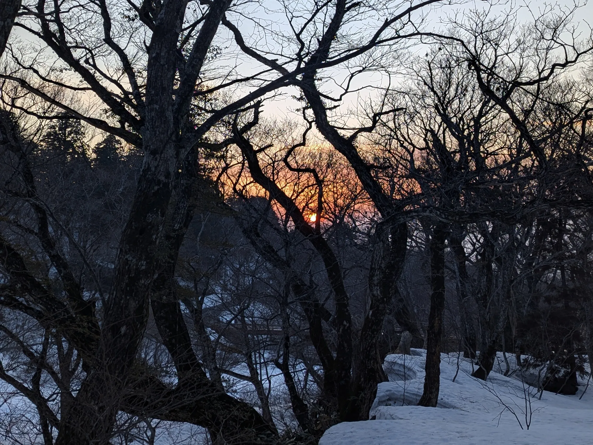
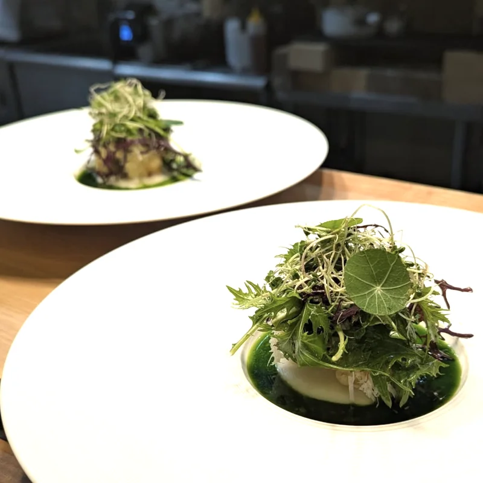
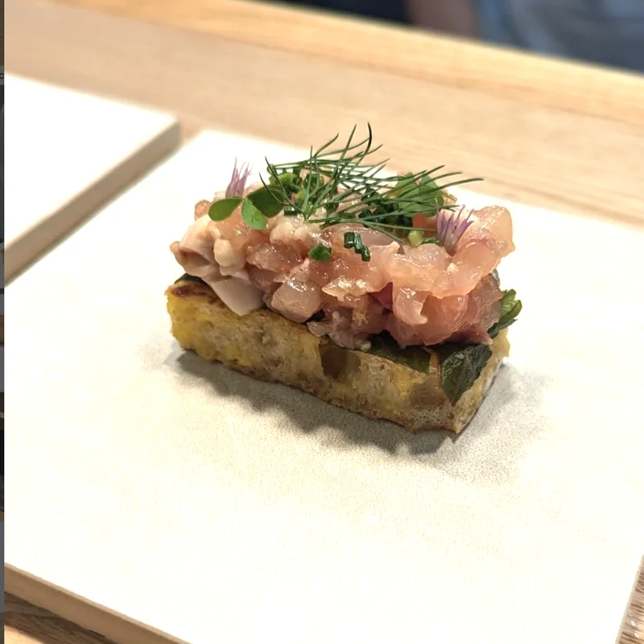
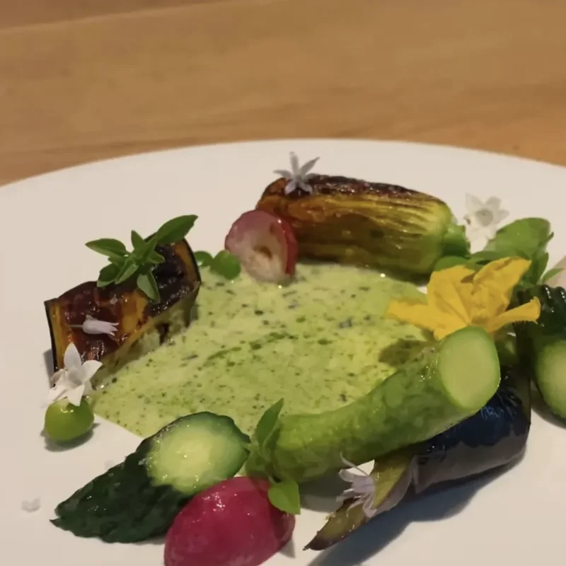
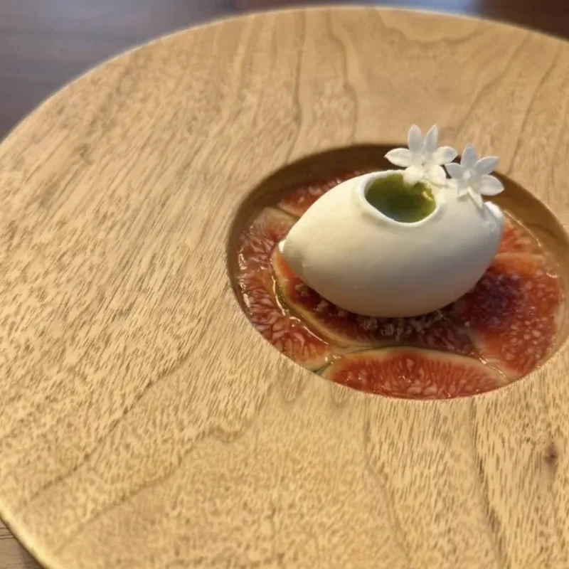
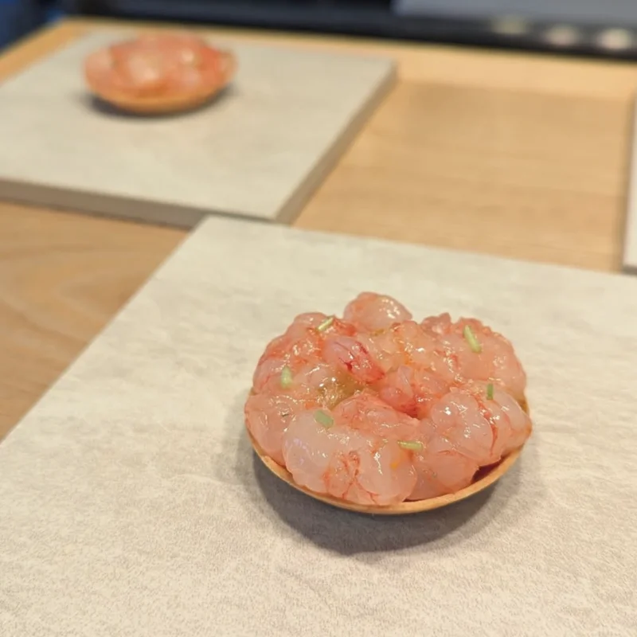
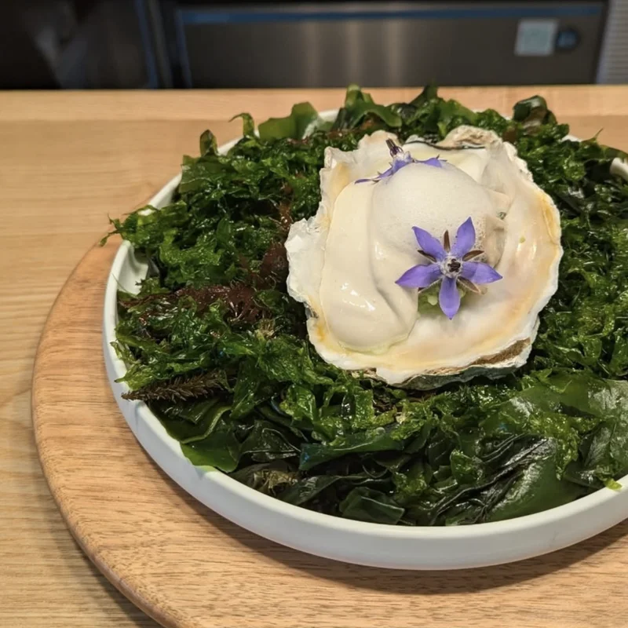
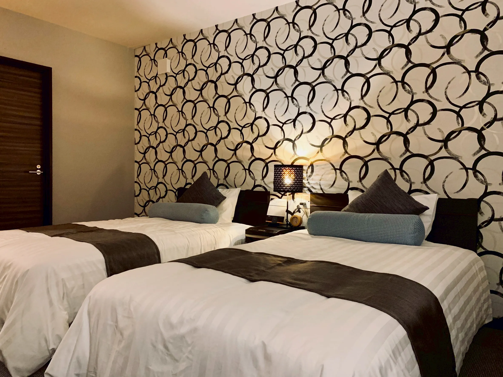

Scène
料理のために用意された、
静かな一夜。
料理と静けさのために
用意された、ひとつの場面。
Scène（セヌ）は、フランス語で「情景」を意味します。
その日の天気、気温、空気の匂い。
畑と海から届く、その日だけの食材。
それらすべてを「一皿の情景」として表現すること。
街の喧騒から離れた大山の麓で、
ただ料理と向き合うための時間をご用意しました。
Scèneという名前
毎日畑で野菜やハーブを収穫するため、日によって野菜の種類も変わります。海の恵みも、天候によっては漁に出られず、日々ラインナップが変わる。そういった山陰の情景を料理から感じ取っていただけるようなコースをご提供しています。

山陰の恵みを、
フレンチという手法で。
※ お品書きは一例です。季節の移ろいや仕入れにより、内容は日々変わります。
山陰の海、山、里が育む食材を、
フレンチの技法で仕立てます。
畑の野菜やハーブ、日本海の魚介、
隠岐の島の岩牡蠣、宍道湖の蜆——
シェフ自ら生産者のもとへ足を運び、
顔の見える関係の中から届く素材だけを選んでいます。
アミューズからデザートまで、
一皿ごとに表情を変えるコースで、
この土地でしか味わえないひと時をお届けします。






※レストランはコース料理のみのご提供となります。
前田 帆貴Hotaka Maeda
鳥取県出身の料理人。東京のビストロで料理長を務めた後、ミシュラン星付きレストランでも研鑽を積み、フレンチの技法と食材への向き合い方を磨いてきました。自身の料理はまだ道半ばと考え、故郷・山陰の食材と真摯に向き合いながら、より良い一皿を目指し続けています。
「その日の山陰を、一皿に。」
余白を楽しむ、
静寂の空間。
Scèneの客室は、食事の余韻と大山の静けさに浸るための場所です。
過度な装飾や設備は設けず、
窓から切り取られる森の景色と、深呼吸できる余白をご用意しました。
ただ、心穏やかに眠るためだけの空間です。
- Wi-Fi完備
- シャワーブース / タオル / ドライヤー / パジャマ
- ※施設内にある陶器風呂の貸切バスルームもご利用いただけます。

子どもは宿泊できますか？
食事はどのような内容ですか？
アレルギー対応は可能ですか？
キャンセル規定を教えてください
ご予約以外のお問い合わせは
こちらのフォームよりお願いいたします。
内容を確認後、担当者よりご連絡いたします。
※確認のため自動返信メールをお送りしています。
Scène
〒689-3318 鳥取県西伯郡大山町大山115-7
[ お車 ]
米子自動車道「溝口IC」より約20分
[ 駐車場 ]
建物の目の前に2台分（先着順・無料）
満車の場合はスタッフへお声がけください。
近隣の無料駐車場をご案内いたします。
[ 公共交通機関 ]
JR米子駅より日交バス「大山寺」行 約50分
「大山寺」バス停下車 徒歩5分